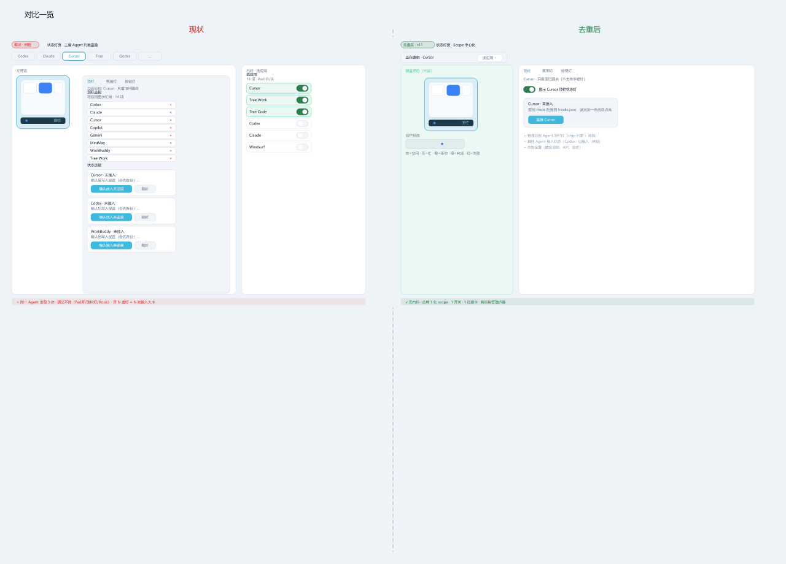
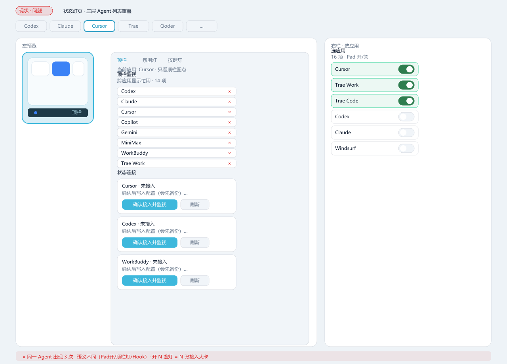
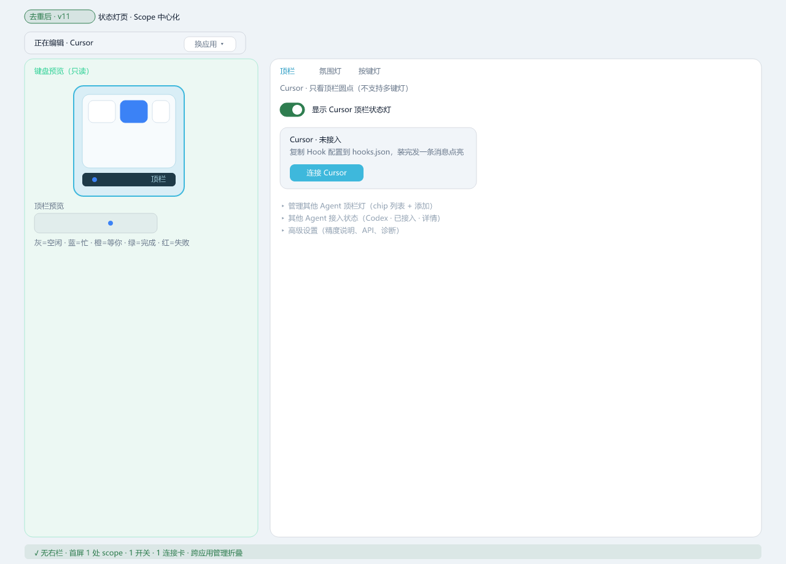

状态灯页去重 · v11
对比
现状
去重后
第一性原理：一屏只回答「当前 AI 灯开没开、Hook 接没接」

现状
三层 Agent 列表（顶栏带 + 监视列表 + 右栏开关）+ N 张接入大卡
去重后
Scope 条 + 左预览 + 右「一开关一连接」+ 跨应用管理折叠

对应你截图：顶栏监视 14 项 + 状态连接多卡 + 右栏选应用 16 项 toggle

Phase 1 目标：无右栏；首屏仅 Cursor 一张连接卡；其他 Agent 进折叠区
现状
问题详图
去重后
目标详图